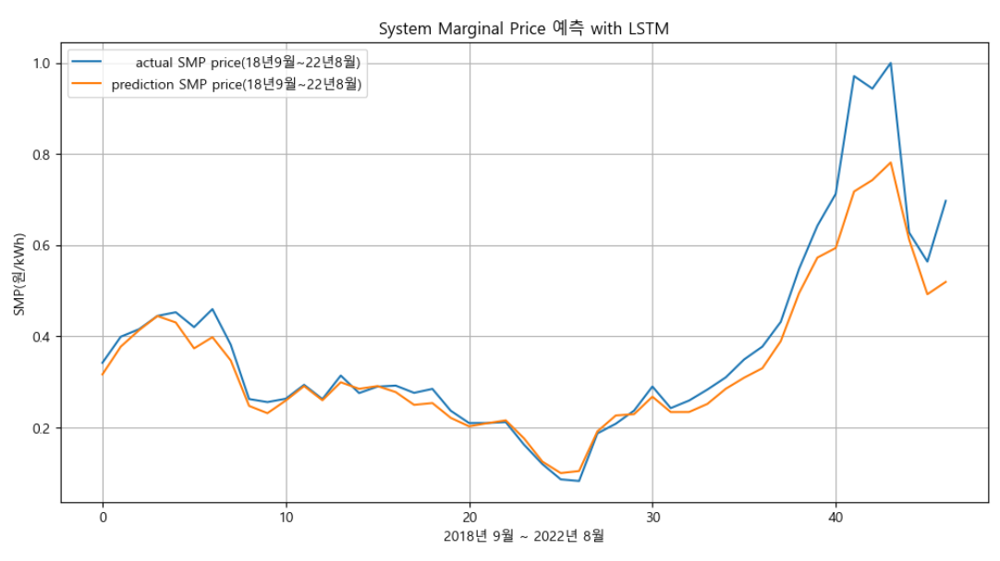

경영학 석사학위 논문 · 2023.08
딥러닝 기반 원전 확대의 전기요금원가 영향 연구
A Study on the Impact of Nuclear Power Plant Expansion Policies on the System Marginal Price of Electricity based on Deep Learning
윤재웅 | 아주대학교 경영대학원 · 지도교수 강주영
정부가 전력수급계획에서 원전·석탄·LNG·신재생의 발전 비율을 어떻게 정하느냐에 따라 전기 도매가격(SMP, 계통한계가격)이 달라진다는 것을 보인 연구입니다. 발전원별 정산단가 등 다른 조건은 2021년과 똑같이 두고, 2030년 전력 수요는 정부 계획의 목표 수요를, 발전원 비율은 제10차 전력수급계획을 반영해 2030년 SMP를 RNN과 LSTM으로 예측했습니다. 정책 선택 하나가 전기요금 원가를 얼마나 움직이는지를 숫자로 보여 줍니다.
−22.2%
정산단가 등 다른 조건을 2021년과 같게 두고 제10차 전력수급계획의 발전원 비율을 반영했을 때, LSTM이 예측한 2030년 SMP는 2021년 실적보다 22.2% 낮습니다. 2021년 전력시장 전체 정산금이 약 55조 원이라 이 차이는 작지 않습니다.

| 모델 | 학습 (2002.01–2018.08) | 검증 (2018.09–2022.08) |
|---|---|---|
| RNN | 12.2% | 13.8% |
| LSTM | 6.5% | 8.6% |
LSTM의 정확도가 RNN보다 약 1.7배 높았고, 예측 범위를 1년으로 좁히면 MAPE는 5.8%까지 내려갑니다.

- 데이터
- 월별 전력거래량(GWh)과 전력거래금액(억 원)으로 SMP(원/kWh)를 예측. 2021년 실적과 발전원별 정산단가로 2030년 거래량·거래금액을 산출했습니다.
- 방법
- 시계열 딥러닝 모델 RNN과 LSTM을 학습·검증해 비교하고, 정확도가 높은 LSTM으로 2030년을 예측했습니다.
- 활용
- 신재생 투자 판단(SMP·REC 가격), 발전 산업의 의사결정, 합리적인 전기요금 논의에 쓸 수 있습니다.
- 다음 연구
- 뉴스 같은 비정형 정보를 생성형 AI로 수치화해 독립변수로 쓰고, 시계열 예측의 랜덤워크 한계를 넘는 연구를 구상하고 있습니다.
- LSTM
- RNN
- SMP
- 제10차 전력수급계획
- 원전 정책
- 시계열 예측